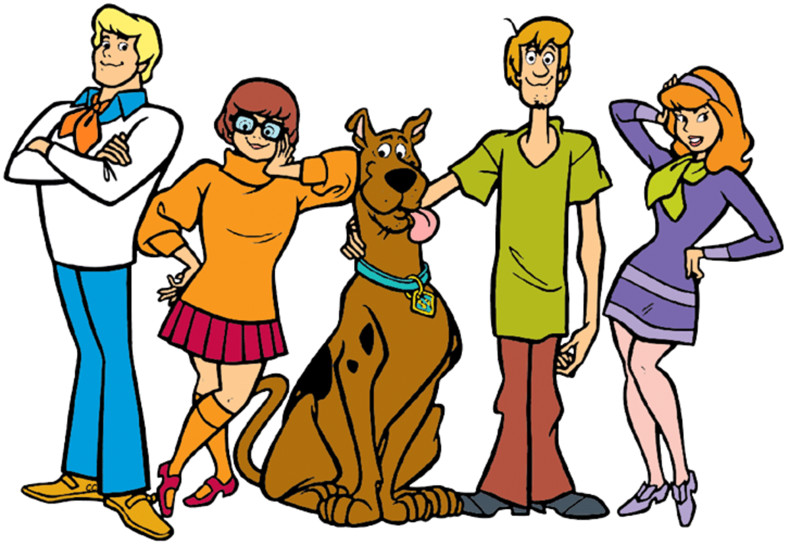

About Scoobie
Scoobie is a dog, a very big dog, who's hobbies include becoming very scared and jumping into the arms of his best friend Shaggy. He is part of the famous mystery solving meddling kids group known as the mystery machine.
Scoobie and Gang
Scoobie's Characteristics
- He's got the munchies
- He's got the snacc
- He's got the floats for food
Scoobie's Friends
Scoobie is part of gang that is notorious for their meddling in nefarious affairs. These heroes include: